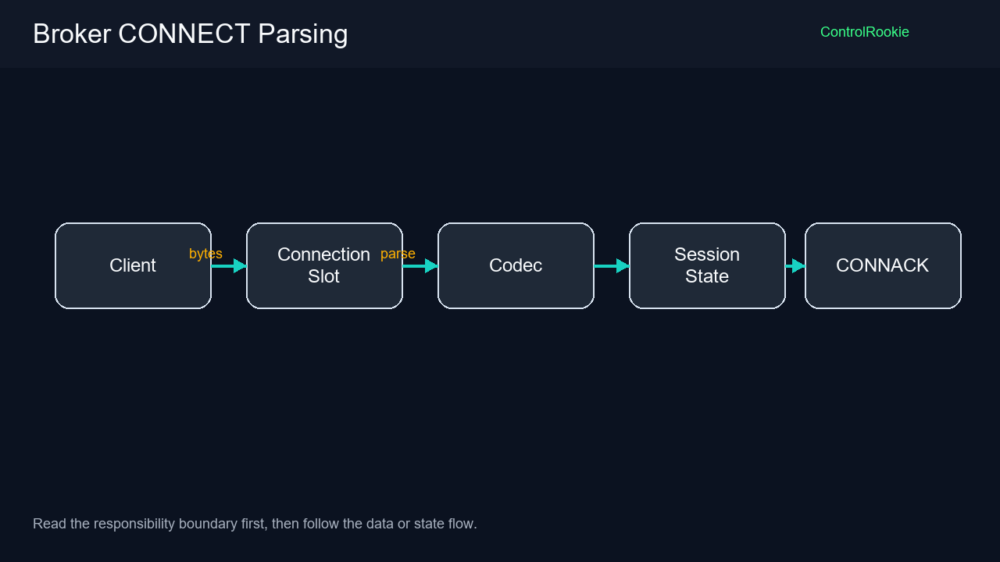

源码范围说明
本篇属于 MQTT 源码加更，展示的是 V1.0 运行链路中的核心源码片段、对象职责和阅读顺序；它不是完整工程源码包，也不等同于 1.0 全量源码清单。完整源码资源后续应在资源/源码页统一维护。
Broker 接收到 TCP 连接，不代表它已经接收了一个 MQTT 客户端。必须等 CONNECT 解析成功，才能创建 MQTT 会话。
适合谁收藏
本篇核心图
读图重点：先看对象之间的职责边界，再看状态或数据如何流动。

- 适合排查客户端能 TCP 连上，但 Broker 不建立 MQTT 会话的人。
- 适合理解一个连接槽位如何把字节流解析成 MQTT 事件的人。
单连接链路
客户端 TCP 字节进入连接槽位，槽位判断完整 MQTT 帧，再交给 Codec 解析 CONNECT。解析成功后，槽位回 CONNACK，并把会话状态交给顶层 Broker。
连接槽位源码片段
iecst
FUNCTION_BLOCK FB_MqttBrokerConnection
VAR_INPUT
bEnable : BOOL; // 当前槽位使能，FALSE 时释放运行态但不主动分配 TCP 连接
uiSlot : UINT; // 当前槽位编号[1..cnMaxClientSlots]
hConnectionIn : NBS.CAA.HANDLE; // 监听层交给本槽位的 TCP 连接句柄
xConnectionActiveIn : BOOL := FALSE; // 监听层确认该 TCP 连接仍处于活动状态，FALSE 时不执行 TCP_Read
udiNowMs : ULINT; // 顶层传入的当前系统时间戳[ms]
END_VAR
VAR_OUTPUT
xActive : BOOL; // 当前槽位是否占用
xMqttConnected : BOOL; // 当前槽位 MQTT 会话是否已建立
xNeedCleanup : BOOL; // 当前槽位请求顶层清理订阅和事务资源
xPublishReady : BOOL; // 本周期解析出一条可路由 PUBLISH
xSubscribeReady : BOOL; // 本周期解析出一条有效 SUBSCRIBE
xUnsubReady : BOOL; // 本周期解析出一条有效 UNSUBSCRIBE
xPubAckReady : BOOL; // 本周期收到订阅者返回的 PUBACK
xPubRecReady : BOOL; // 本周期收到订阅者返回的 PUBREC，用于 QoS2 出站事务推进
xPubRelReady : BOOL; // 本周期收到发布者返回的 PUBREL，用于 QoS2 入站事务推进
xPubCompReady : BOOL; // 本周期收到订阅者返回的 PUBCOMP，用于 QoS2 出站事务完成
eLastError : E_MqttBrokerError; // 当前连接槽位最近错误码
stConnection : ST_MqttBrokerConnection; // 当前连接槽位公开会话数据这些 Ready 输出就是连接槽位和顶层 Broker 的边界。槽位解析出事件，顶层决定怎么处理事件。
CONNECT 解析源码片段
iecst
METHOD M_ParseConnect : BOOL
VAR_INPUT
uiBodyOffset : UINT; // CONNECT 可变头在报文缓冲区中的起始偏移[byte]
uiFrameLen : UINT; // 当前 CONNECT 完整报文长度[byte]
END_VAR
VAR_IN_OUT
aBuffer : ARRAY[*] OF BYTE; // MQTT 原始报文缓冲区
stConnection : ST_MqttBrokerConnection; // 当前连接槽位，会被写入 ClientID、KeepAlive 和 Will 信息
END_VAR
VAR_OUTPUT
eError : E_MqttBrokerError; // 解析失败时返回的 Broker 错误码
END_VAR解析 CONNECT 要把协议字段写回 stConnection：ClientID、KeepAlive、CleanSession、Username、Password、Will Topic、Will Payload。
这一篇最该记住的几句话
TCP 连接进槽位只是第一步，CONNECT 解析成功后才有 MQTT 会话。
本篇结论
Broker 单连接槽位要做三件事：读 TCP 字节、识别完整 MQTT 帧、把帧解析成事件。CONNECT 解析成功只是会话入口，后续 PUBLISH、SUBSCRIBE、PING、DISCONNECT 都是同一条分发链路上的不同事件。
评论区预留
这里先保留评论和回复结构，不接入第三方服务。后续统一决定登录、匿名、审核、反垃圾和静态站兼容策略。